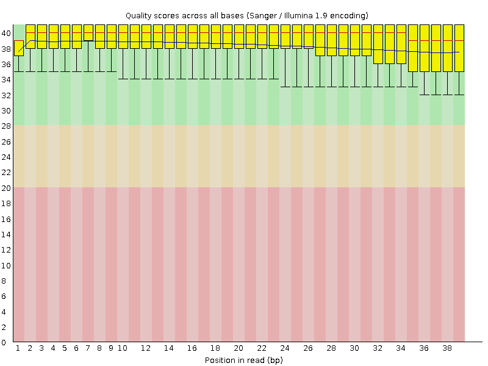
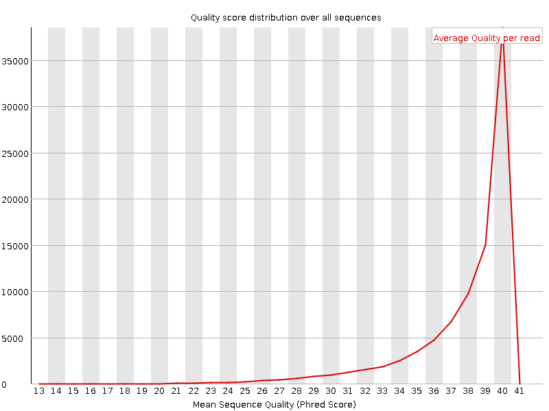
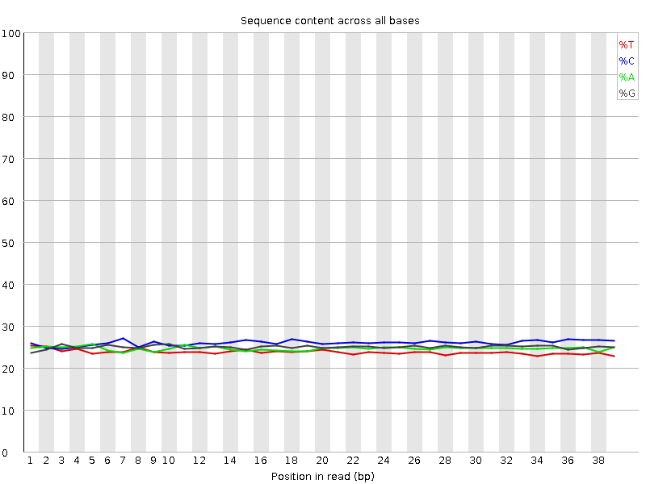
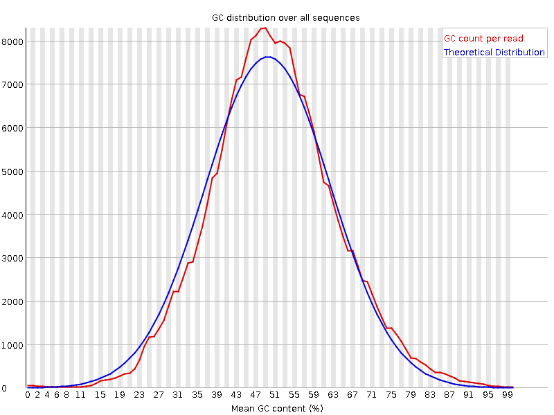
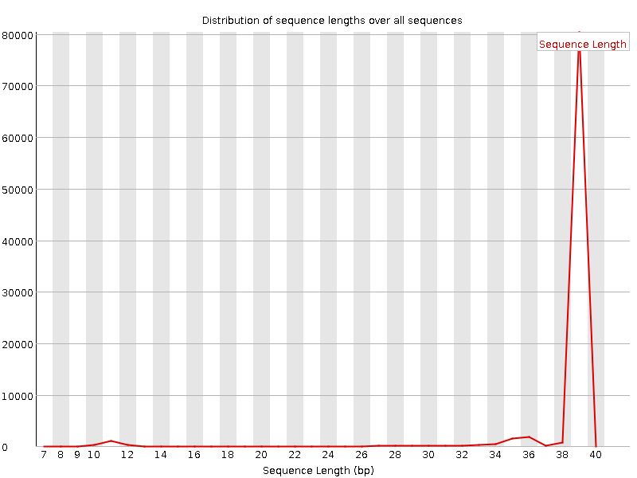
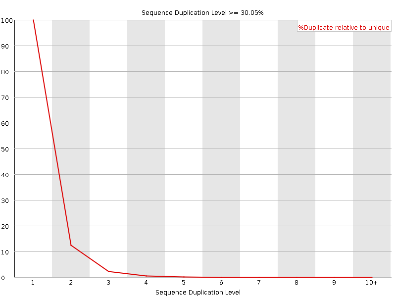
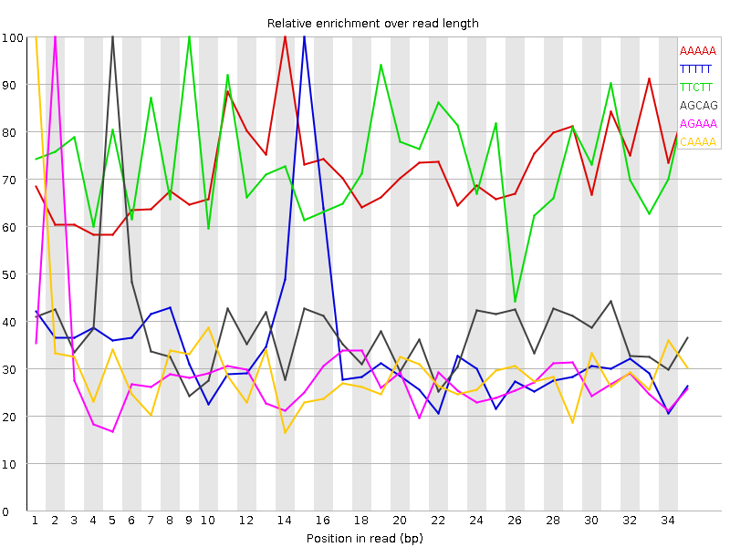

![[OK]](Icons/tick.png) Basic Statistics
Basic Statistics
| Measure | Value |
|---|---|
| Filename | Sample_1_L001_shorten.fastq |
| File type | Conventional base calls |
| Encoding | Sanger / Illumina 1.9 |
| Total Sequences | 90028 |
| Filtered Sequences | 0 |
| Sequence length | 8-39 |
| %GC | 51 |
Per base sequence quality

Per sequence quality scores

Per base sequence content

Per base GC content

Per sequence GC content

Per base N content

![[WARN]](Icons/warning.png) Sequence Length Distribution
Sequence Length Distribution

Sequence Duplication Levels

Overrepresented sequences
| Sequence | Count | Percentage | Possible Source |
|---|---|---|---|
| CTGTAGCTCTA | 265 | 0.29435286799662325 | No Hit |
| AGAACTTTGTA | 257 | 0.28546674367974406 | No Hit |
| CTGTAGCTCA | 188 | 0.20882392144666104 | No Hit |
| CTGTAGCTCGA | 95 | 0.10552272626294043 | No Hit |
Kmer Content

| Sequence | Count | Obs/Exp Overall | Obs/Exp Max | Max Obs/Exp Position |
|---|---|---|---|---|
| AAAAA | 12100 | 4.226824 | 5.877727 | 14 |
| TTTTT | 8385 | 3.4664493 | 10.115393 | 15 |
| TTCTT | 7910 | 3.0027554 | 4.072248 | 9 |
| AGCAG | 7925 | 2.5662794 | 6.6934094 | 5 |
| AGAAA | 6380 | 2.2018678 | 7.607372 | 2 |
| CAAAA | 6620 | 2.1962361 | 7.2565713 | 1 |
| AAAAG | 6025 | 2.07935 | 7.2562623 | 2 |
| AACAA | 5670 | 1.8810662 | 6.5764236 | 5 |
| AGCTC | 5770 | 1.8576397 | 9.763861 | 5 |
| GCAGG | 5640 | 1.80437 | 6.020964 | 6 |
| TTTGT | 4090 | 1.615163 | 5.6243052 | 6 |
| AAGCA | 4825 | 1.5814672 | 6.3911853 | 4 |
| AAACA | 4630 | 1.5360382 | 6.4690356 | 4 |
| AAAGC | 4555 | 1.4929702 | 6.7802124 | 3 |
| TGTAG | 4085 | 1.4899296 | 10.018653 | 2 |
| CAAGG | 4440 | 1.437764 | 6.0035176 | 7 |
| GTTTT | 3410 | 1.3466274 | 5.206137 | 14 |
| CTGTA | 3575 | 1.2534301 | 9.392946 | 1 |
| ACAAG | 3795 | 1.243869 | 5.612816 | 6 |
| TAGAA | 3420 | 1.2207515 | 5.9917965 | 1 |
| AACTT | 3415 | 1.2119172 | 5.716451 | 3 |
| GAACT | 3565 | 1.2085176 | 5.00073 | 2 |
| GAAAC | 3670 | 1.2028981 | 5.6131268 | 3 |
| GTAGC | 3320 | 1.1119194 | 8.915704 | 3 |
| ACTTT | 2995 | 1.0992833 | 5.352196 | 4 |
| TAGCT | 2620 | 0.9185976 | 9.333496 | 4 |